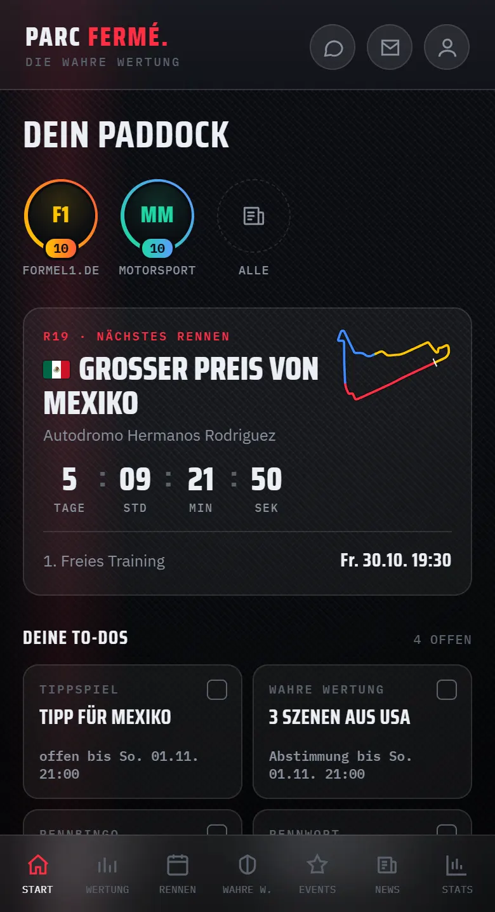
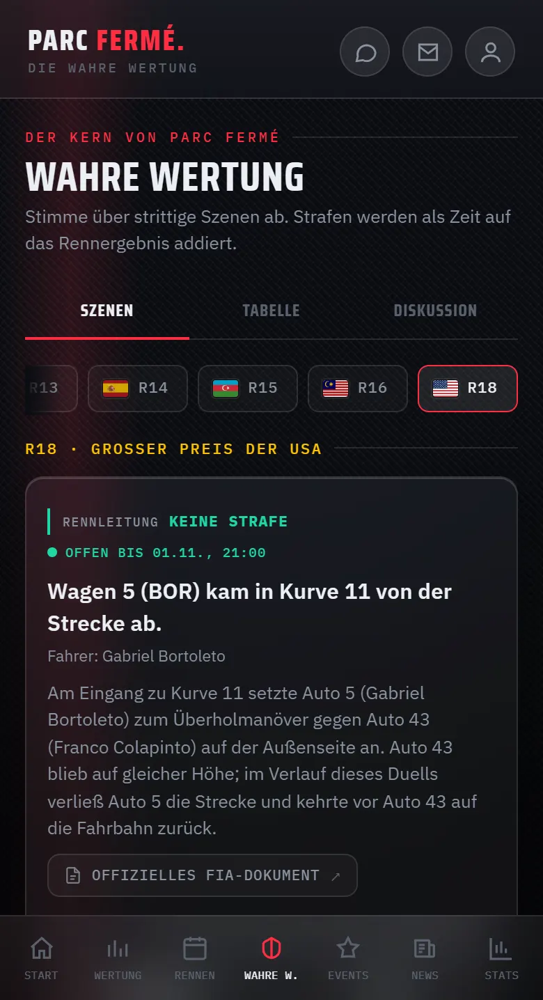
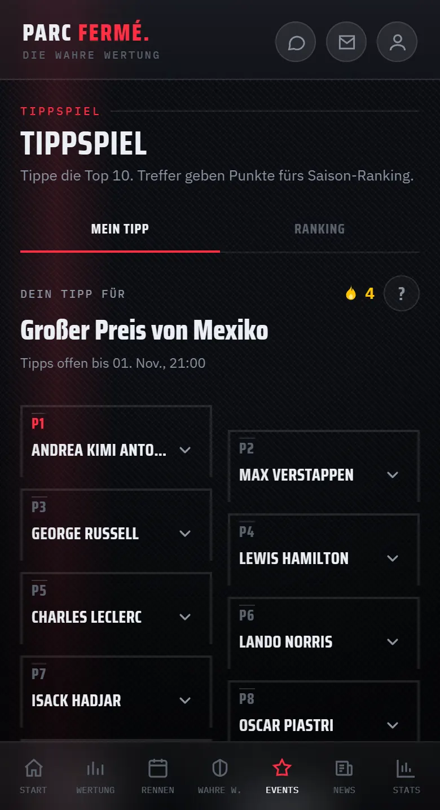
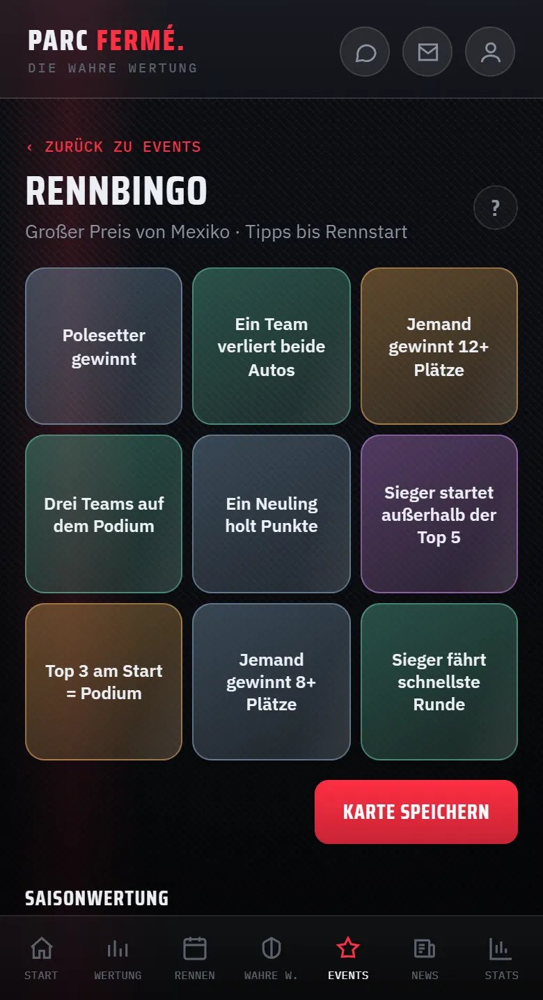
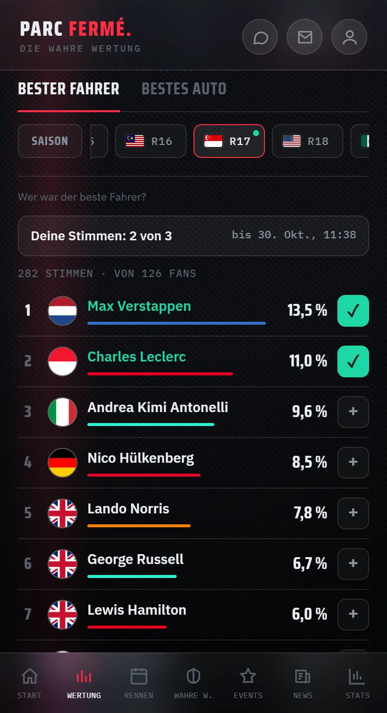
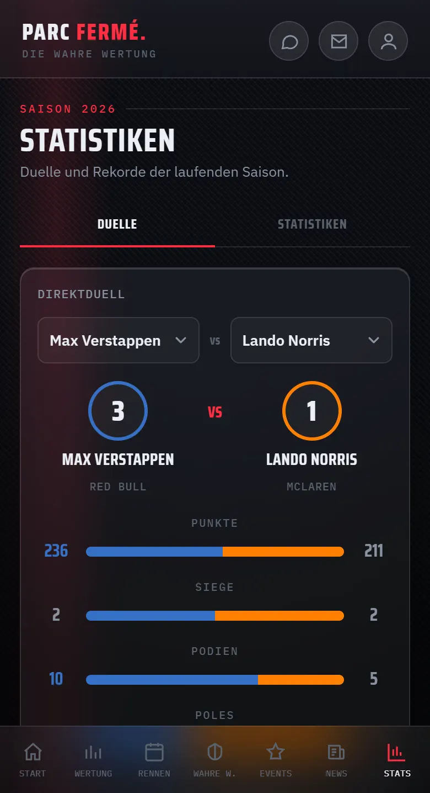

PARC FERMÉ
Dein Paddock für jedes Rennwochenende.
Zeitplan und Ergebnisse, dein Urteil zu strittigen Szenen, Tippspiel, Rennbingo und mehr — kostenlos, ohne Werbung und ohne Tracking.

Was dich erwartet
- 01Rennwochenende
Alle Sessions mit Startzeit in deiner Zeitzone, Countdown und Wetter. Danach Ergebnisse mit Podium — auch für den Sprint.
- 02Wahre Wertung
Strittige Szenen jedes Rennens: Du entscheidest, ob es eine Strafe hätte geben müssen. So sieht die WM nach dem Urteil der Fans aus.
- 03Tippspiel
Tippe die Top 10 vor dem Start, sammle Punkte und miss dich in eigenen Räumen mit Freunden.
- 04Rennbingo
Füll deine Karte mit neun Ereignissen. Komplette Linien zählen doppelt; nach der Auswertung siehst du die Karten der anderen.
- 05Fan-Power
Wähle nach jedem Rennen den besten Fahrer und das beste Auto — pro Rennen und über die Saison.
- 06Statistiken
Teamduelle, Rekorde und ein Baukasten für eigene Auswertungen, für Fahrer und Teams.
- 07Rennwort
Jeden Tag ein Begriff aus dem Motorsport in sechs Versuchen. Bau deine Serie auf.
- 08Und mehr
Startampel, Quiz „Grill the Fan“, Umfragen, Watch-Along-Chat zum Rennen und Schlagzeilen als Storys.
Ein Blick in die App





Fair und privat
Anmeldung mit Google
Für Tippspiel, Abstimmungen, Spiele und Chat brauchst du ein Konto. Du meldest dich mit deinem Google-Konto an — dabei übernehmen wir nur deine E-Mail-Adresse und deinen Namen, um dein Profil anzulegen. Auf weitere Daten deines Google-Kontos greifen wir nicht zu.
Was wir verarbeiten und warum, steht in der Datenschutzerklärung.